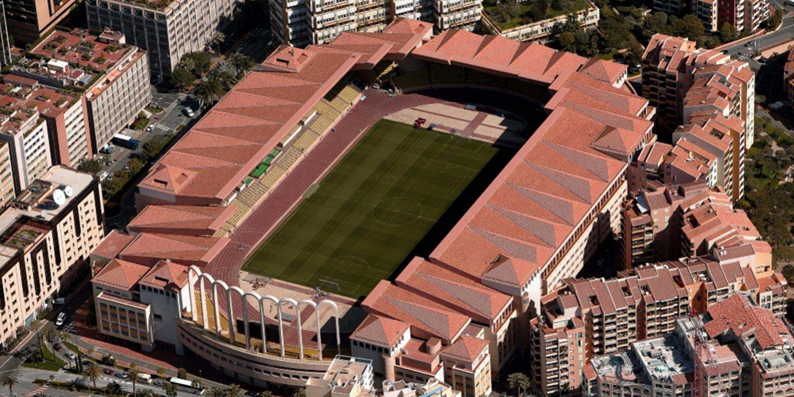
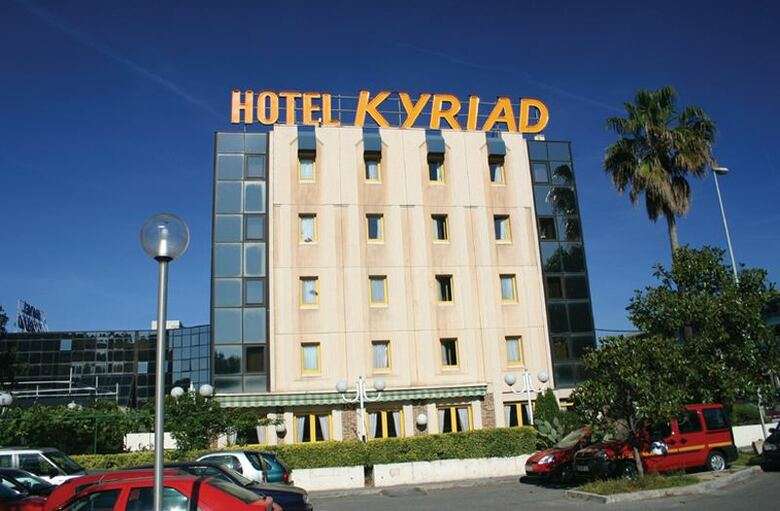
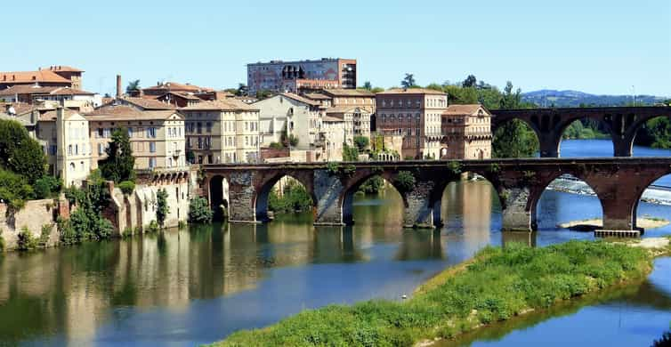

Mi hotel es Chambre Luxe casino estare una noche y cuesta 86€.
La Gasolina me costo unos 85€ Rellenar la entera
El restaurante que ire a comer sera el Piazza y el menu cuesta al rededor de 20€.
 Luego ire a visitar el estadio louis 2 y que vale la entrada al tour 20€ En este dia saldre a primera hora del hotel de Monaco para cojer el coche ir para Niza que desde el hotel se tarda una cantidad de 33 minutos

Ire directamente al hotel Kyriad Nice que cuesta 63€ pero tengo la comida y la cena dentro del paquete Me quedo en el hotel hasta la tarde por que tengo reserva de tour en el estadio del niza El tour me cuesta 16€ para ver el estadio de el Allianz Riviera En el dia 3 saldre del hotel de niza y ire a por el coche y ire directo para mi siguiente destino montpellier cuando llegue a Montpellier ire al hotel que reserve la noche aterior llamado Hotel Kyriad Montpellier Centre-Antigone El hotel me cuesta la noche unos 56€ con todo incluido por eso me quede en el hotel hasta la tarde que tenia reserva en un tour para ir a visitar el staduim la mosson El tour del estadio cuesta al rededor de unos 25€ despues de visitar el estadio tube que rellenar el deposito del coche. Me costo llenar todo el deposito unos 75€
Saldre del hotel de montpellier cojere la carretera para ir a toulouse cuando llegue a toulouse ire directamente al hotel visitare un poco la ciudad luego ire otra vez al hotel hasta esperar pa ir al tour del estadio EL HOTEL Riquelme con todo incluido me cuesta 63€

Paseo por toulouse El tour de el estadio del toulouse me cuesta unos 13€ Cuando salgo del hotel me voy directo a Paris que son unas 7 horas de viaje cuando llegue a Paris tendre que rellenar el depositio que seran unos 80€ y ya ire al hotel. Despues ire a dar un paseo y ire a la torre fiel despues dare un pase hasta el hotel y ya me quedare alli por que estra cansado del viaje El hotel Andrea cuesta unos 129€ con todo incluido. Visitar la torre effiel es o pagando o gratuito a si que voy gratis Me levanto voy a desayunar subo de nuevo a la habitacion hago la maleta bajo de nuevo a redecpicon dejo la llave y me despido. Voy al coche y voy al estadio del Paris fc y paris saint germen cuando ya los he visitado me voy a mi siguiente destino andorra. El tour cuesta unos 25€. El tour cuesta 25€ Despues de visitar el Parc dels Princeps me voy Andorra Llego Andorra me quede dormido en un aparcamiento dentro del coche. Me levante y mi unica mision en andorra es ir al restaurante de messi y cuando acabe de comer voy para barcelona La comida me costo unos 250€ aproximadamente Salgo del hotel y me fui directo para Barcelona Precio final aproximadamente 900€2 dia
3 Dia
4 Dia
5 Dia
6 Dia
7 Dia